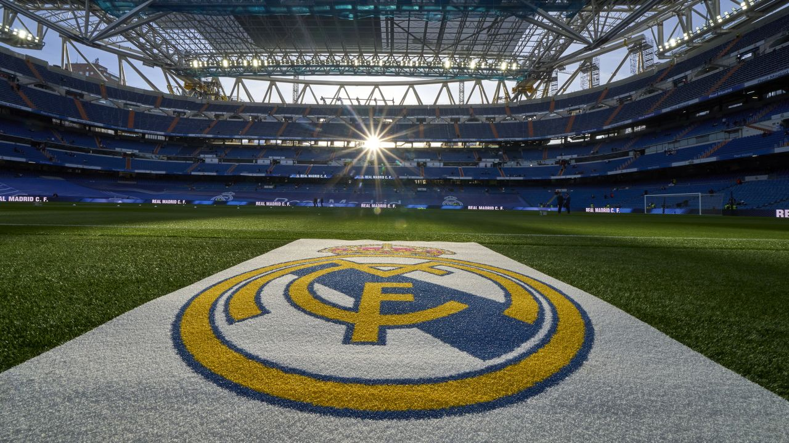
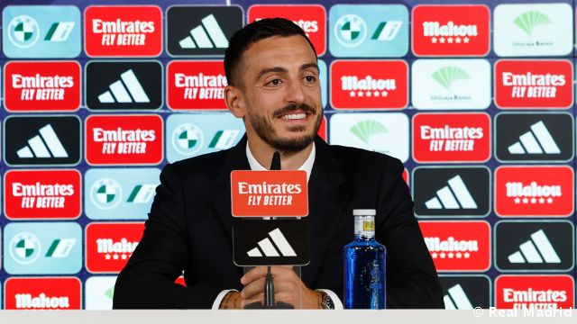
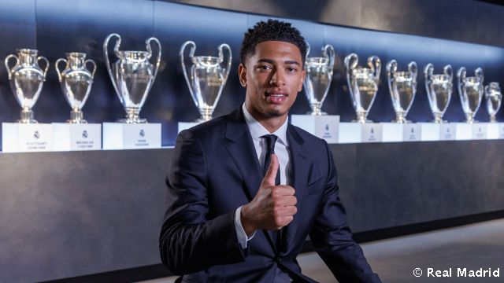
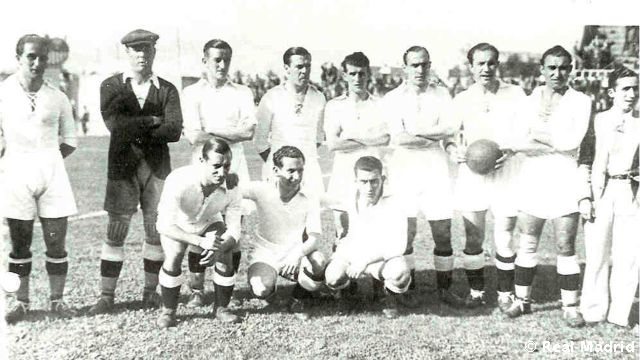
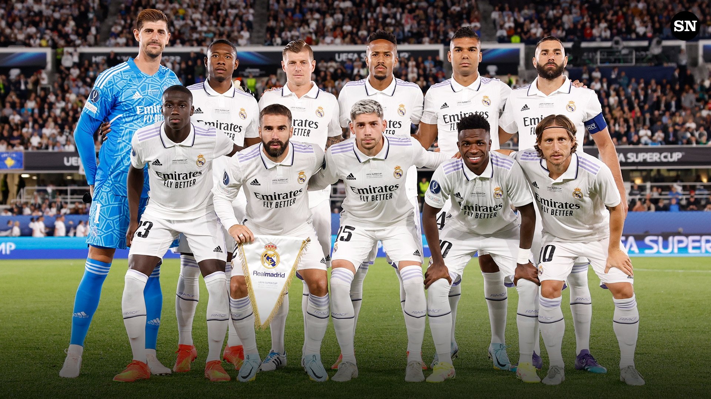

Home
About us
Contact

NEWS
  
Joselu: "Real Madrid is the most important club in my life"
Bellingham: “I'm looking forward to playing Bernabéu, giving everything I can and winning”
Today marks 87 years since the 7th Copa de España
Current Team

>Nr.1 Thibaut Courtois
Nr.2 Dani Carvajal
Nr.3 Éder Militão
Nr.4 David Alaba
Nr.8 Toni Kroos
Nr.10 Luka Modrić
Nr.14 Casemiro
Nr.15 Federico Valverde
Nr.23 Ferland Mendy
Nr.20 Vini Jr.
Nr.9 Karim Benzema